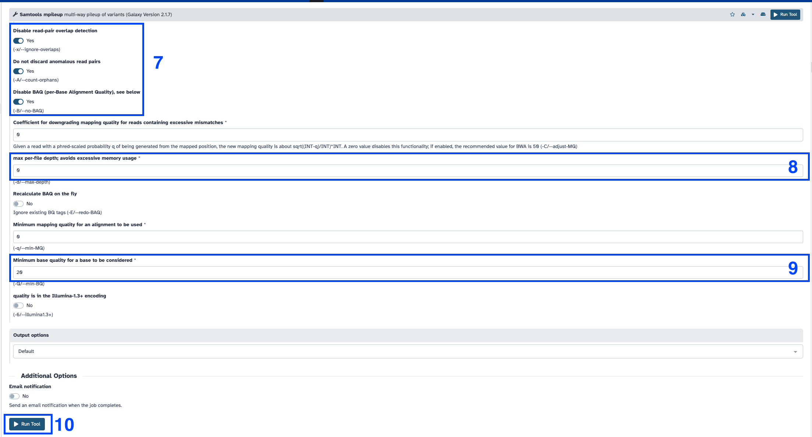
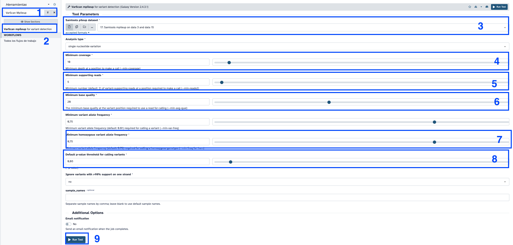
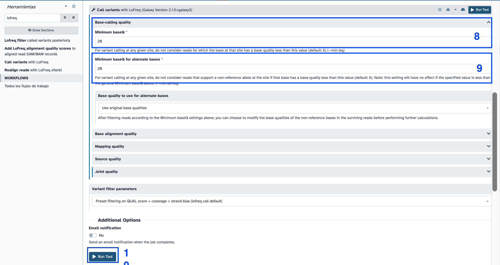

Galaxy for virologist training Exercise 6: Illumina Variant Calling 101
| Title |
Galaxy |
| Training dataset: |
PRJEB43037 - In August 2020, an outbreak of West Nile Virus affected 71 people with meningoencephalitis in Andalusia and 6 more cases in Extremadura (south-west of Spain), causing a total of eight deaths. The virus belonged to the lineage 1 and was relatively similar to previous outbreaks occurred in the Mediterranean region. Here, we present a detailed analysis of the outbreak, including an extensive phylogenetic study. This is one of the outbreak samples. |
| Questions: |
- What is variant calling?
- What is a vcf file?
- How can I inspect a variant in a bam file to look for false positives?
- How can I make a consensus genome based on a variant calling process?
|
| Objectives: |
- Understand variant calling concept
- Learn how to interpret a vcf file
- Learn how to make a reference consensus genome.
- Learn how to visualize mapping and variant calling results
|
| Estimated time: |
2h |
1. Description
After mapping, when we have a re-sequencing experiment, the next step usually comprises the variants calling step. Variant calling software tries to identify variants, positions that differ in our reads compared to a reference genome.
We may want to have a consensus genome as well, which is obtained by including the variants we just identified in the published reference genome.
We are going to address this type of analysis in this tutorial.
2. Upload data to galaxy
Training dataset
- Experiment info: PRJEB43037, WGS, Illumina MiSeq, paired-end
- Fastq R1: ERR5310322_1 - url :
ftp://ftp.sra.ebi.ac.uk/vol1/fastq/ERR531/002/ERR5310322/ERR5310322_1.fastq.gz
- Fastq R2: ERR5310322_2 url :
ftp://ftp.sra.ebi.ac.uk/vol1/fastq/ERR531/002/ERR5310322/ERR5310322_2.fastq.gz
- Reference genome NC_009942.1: fasta -- gff
Create new history
- Click the
+ icon at the top of the history panel and create a new history with the name variant calling 101 tutorial as explained here
Upload data
Follow the same instructions here
ftp://ftp.sra.ebi.ac.uk/vol1/fastq/ERR531/002/ERR5310322/ERR5310322_1.fastq.gz
ftp://ftp.sra.ebi.ac.uk/vol1/fastq/ERR531/002/ERR5310322/ERR5310322_2.fastq.gz
https://ftp.ncbi.nlm.nih.gov/genomes/all/GCF/000/875/385/GCF_000875385.1_ViralProj30293/GCF_000875385.1_ViralProj30293_genomic.fna.gz
https://ftp.ncbi.nlm.nih.gov/genomes/all/GCF/000/875/385/GCF_000875385.1_ViralProj30293/GCF_000875385.1_ViralProj30293_genomic.gff.gz
Rename the data as follows:
ERR5310322_1.fastq.gz to ERR5310322_1 with tag #forwardERR5310322_2.fastq.gz to ERR5310322_2 with tag #reverseGCF_000875385.1_ViralProj30293_genomic.fna.gz to NC_009942.1 fasta with tag #fastarefGCF_000875385.1_ViralProj30293_genomic.gff.gz to NC_009942.1 gff with tag #gffref

3. Preprocess our reads.
Follow instructions here
Then, fix fastp tags on the output data to be as follows:

4. Map trimmed reads against the reference genome.
Follow:
- Is this single or paired library: paired.
- FASTA/Q file #1 : fastp Read 1 output #forward
- FASTA/Q file #2 : fastp Read 2 output #reverse
- Will you select a reference genome from your history or use a built-in index? : Use a genome from the history and build index.
- Do you want to use presets? : Very sensitive local. This setting will hugly affect the mapping results, depending on the dataset/experiment must be tweaked (read bowtie2 manual)
- Save the bowtie2 mapping statistics to the history


5. Variant Calling
- Search samtools mpileup in the search toolbox, scroll down and select
Samtools mpileup multi-way pileup of variants
- Bam files: Bowtie2 bam file
- Use reference: Use reference/genome from history. NC_009942.1.
- Set advanced options: Advanced
- Disable read-pair overlap detection: Yes
- Disable BAQ (per-Base Alignment Quality), see below: Yes
- Do not discard anomalous read pairs: Yes
- max per-file depth; avoids excessive memory usage: 0
- Minimum base quality for a base to be considered: 20
- Click execute and wait.


- Click the :eye: icon on the history and inspect the mpileup output.
VarScan
- Search
VarScan Mpileup in the search toolbox.
- Samtools pileup dataset: samtools mpileup output
- Minimum read depth: 10
- Minimum supporting reads: 5
- Minimum base quality at a position to count a read: 20
- Minimum variant allele frequency threshold: 0,75
- Default p-value threshold for calling variants: 0,05
- Click execute and wait

- Click the :eye: icon and inspect the vcf file.
VCF stats
- Search
bcftools stats in the search toolbox.
- VCF/BCF Data: varscan vcf output.
- Click execute and wait.
- Click the :eye: icon and inspect the stats.
How may variants do we have in our vcf file?
number of SNPs: 462
Ivar variants
- Search
ivar variants in the search toolbox.
- Select
ivar variants Call variants from aligned BAM file
- Bam file: bowtie bam output
- Reference: NC_009942.1
- Minimum quality score threshold to count base: 20
- Minimum frequency threshold: 0.75
- Output format: Both tabular and vcf
- In VCF only output variants that PASS all filters > Yes
- Click execute and wait.

Lofreq
Insert indel qualities
- Search
Insert indel qualities in the search toolbox. Select Insert indel qualities into a BAM file
- Reads: bowtie2 bam output.
- Click execute and wait.

Call variants
- Search
lofreq in the search toolbox. Select Call variants with lofreq.
- Input reads in BAM format: indel qualities bam output.
- Choose the source for the reference genome: History. NC_009942.1
- Types of variants to call: SNVs and INDELs
- Variant calling parameters: Configure settings
- Minimal coverage: 10
- Minimum baseQ: 20
- Minimum baseQ for alternate bases: 20
- Click execute and wait.


Compare vcfs among callers
Visualize datasets
- Search
upSet diagram in the search toolbox.
- Select input files for which to produce intersections: select vcf from varscan, vcf from lofreq filter and vcf from ivar variants.
- Click execute and wait.
- Click the :eye: icon and check the diagram.
How many variants differ among the vcfs?
There are up to 3 variants more in VarScan than iVar.
7. Consensus genome
- Search
bcftools consensus in the search toolbox.
- VCF/BCF Data: varscan vcf output.
- Choose a reference genome: use genome/reference from history. Select NC_009942.1.
- Click execute and wait.

Note: for this example we are not going to mask any position with low coverage, this will be addressed in the exercise 8, with a real example.
Ivar Consensus
- Search
ivar consensus in the search toolbox.
- Bam file: bowtie bam output.
- Use N instead of - for regions with less than minimum coverage: Yes

Here is the galaxy history for this exercise: https://usegalaxy.eu/u/smonzon/h/variant-calling-101-tutorial-1